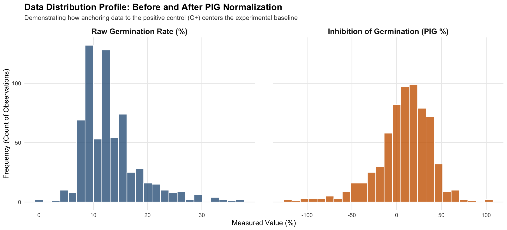
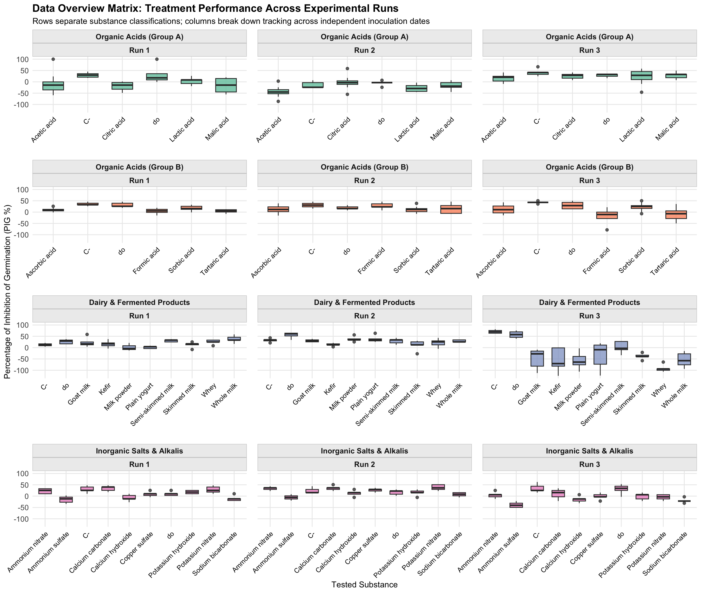
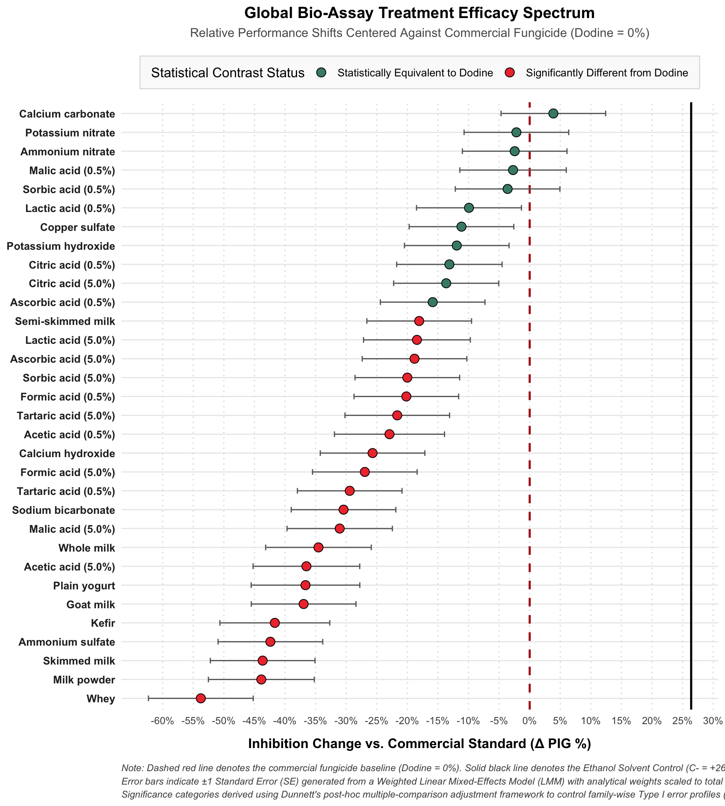
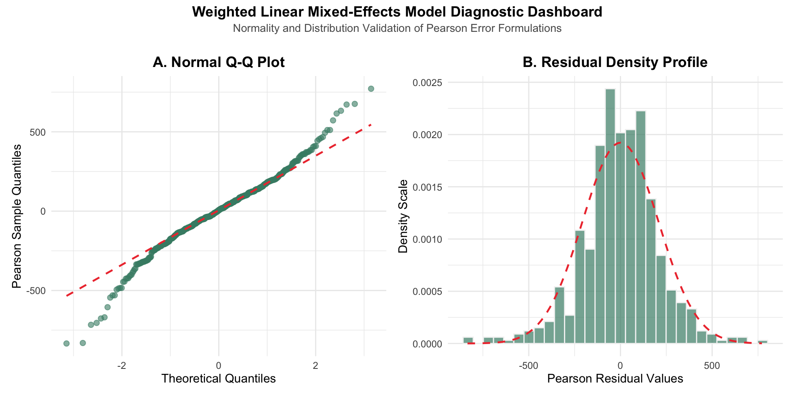

| Code | Substance | Concentration |
|---|---|---|
| ac0.5 / ac5 | Acetic acid | 0.5% and 5% |
| al0.5 / al5 | Citric acid | 0.5% and 5% |
| at0.5 / at5 | Lactic acid | 0.5% and 5% |
| am0.5 / am5 | Tartaric acid | 0.5% and 5% |
| aa0.5 / aa5 | Malic acid | 0.5% and 5% |
| as0.5 / as5 | Ascorbic acid | 0.5% and 5% |
| af0.5 / af5 | Sorbic acid | 0.5% and 5% |
| aasc0.5 / aasc5 | Formic acid | 0.5% and 5% |
| sl5 | Whey | 5% |
| lp1 | Milk powder | 1% |
| ldv10 | Skimmed milk | 10% |
| lsv5 | Semi-skimmed milk | 5% |
| lev3 | Whole milk | 3% |
| yn1 | Plain yogurt | 1% |
| ke1 | Kefir | 1% |
| lsc5 | Goat milk | 1% |
| CaOH2 | Calcium hydroxide | 1% |
| NaHCO3 | Sodium bicarbonate | 1% |
| KOH | Potassium hydroxide | 1% |
| NH4NO3 | Ammonium nitrate | 1% |
| KNO3 | Potassium nitrate | 1% |
| NH4SO4 | Ammonium sulfate | 1% |
| CuSO4 | Copper sulfate | 1% |
| CaCO3 | Calcium carbonate | 5% |
| C- | Negative Control etOH | 70% |
| C+ | Positive Control glucose solution | - |
| do | Syllit MaX Dodine | 54.4% (2.6 ml/l) |
| To prevent redundant rows, substances tested at dual concentrations (0.5% and 5%) are consolidated into single entries. Single-dose treatments comprising dairy derivatives (whey, milk powder, skimmed milk, semi-skimmed milk, whole milk, natural yogurt, and kefir) and inorganic salts are specified at their precise operational concentration (1%, 3%, 5%, or 10%). | ||
Fungicide effect evaluation of 24 substances against Alternaria alternata pv. citri (Spore Germination Data Anaylsis)
YAML
title: “Fungicide effect evaluation of 24 substances against Alternaria alternata pv. citri (Spore Germination Data Anaylsis)” author: “Raymundo Morán” format: html theme: cosmo toc: true toc-location: left —
Experiment Set Up
24 different substances were evaluated for fungicidal activity against Alternaria alternata pv. citri (8 of them were evaluated at 2 different concentrations giving a total of 32 treatments) in spore suspensions of glucose dilution + treatment in a 1:1 ratio. Incubated for 24hrs at 25ºC
The experiment was divided into sets containing the treatments + Negative and Positive Controls + Dodine (a commercial effective fungicide) for comparison. Each treatment and controls had 5 replicates and each set 3 repetitions (3 runs of the experiment) Figure 1
After the 24hrs incubation time The Percentage of Spore Germination (%G) was determined by counting the germinated spores out of 100 spores of each treatment replicate. All the data was collected into a csv file
Data Set Up
After consulting bibliography for fungicide assessment, Kos K. 2002 formula for Percentage of Inhibition of Germination \((PIG)\) was selected
To quantify the inhibition of germination caused by each treatment relative to the positive control of each set, calculated as:
\[ PIG = \left(\frac{G_{PC} - G_{T}}{G_{PC}}\right)\times100 \] where:
- (PIG) = Percentage of Inhibition of Germination (%)
- (GPC) = Germination percentage of the positive control (%)
- (GT) = Germination percentage of the treatment (%)
where:
\[ G = \left(\frac{germinated}{germinated + no.germinated}\right)\times100 \] For PIG a value of 0% indicates no inhibition relative to the positive control, whereas a value of 100% indicates complete inhibition of germination. Negatives values would indicate that the treatment not did only fail to inhibit germination but helped to increase it relatively to the positive control.
PIG Calculation
To calculate the PIG for each treatment, the positive control (C+) G of each set was calculated, the C+ values were extracted and then the mean of the C+G’s were introduced to it’s correspondent set repetition into the data base.
#| message: false
#| warning: false
# Data base loading
raw_data <- read.csv("germinacion.csv", stringsAsFactors = FALSE)
#Cleaning of the data since it had "missing" values
cleaned_data <- raw_data %>%
filter(!is.na(germinated) & !is.na(no.germinated) & treatment != "") %>%
mutate(
germinated = as.numeric(germinated),
no_germinated = as.numeric(no.germinated),
total_spores = germinated + no.germinated, # Total Spores count
pct_germination = (germinated / total_spores) * 100 # G Calculation
)
# G for the Positive Control
# Extraction of the Positive Control Values
control_rates <- cleaned_data %>%
filter(treatment == "C+") %>%
group_by(inoculation, treat.set) %>%
summarise(control_pct_mean = mean(pct_germination, na.rm = TRUE), .groups = 'drop')
# Introduction of the Positive Control G correspondent to each set repetition
# PIG Calculation
analyzed_data <- cleaned_data %>%
left_join(control_rates, by = c("inoculation", "treat.set")) %>%
mutate(
PIG = ((control_pct_mean - pct_germination) / control_pct_mean) * 100
) %>%
filter(treatment != "C+")Data Overview
To better understand if the calculation of the \(PIG\) helps into the analysis of the data, looking at the distribution of the percentages of germination per treatment evaluation compared to the \(PIG\) might give a better insight. Since the \(PIG\) is calculated on each inoculation date positive control germination rate is absorbing some errors due the behavior of the inoculum and normalizing the data, as shown in the Figure 2
Point out that the raw germination rate centers around a very low baseline (averaging roughly 10% to 15% overall, even for controls). Because the fungus germinates at different absolute intensities from week to week based on batch life, raw data spreads this biological background noise across the entire graph.
library(dplyr)
library(tidyr)
library(ggplot2)
processed_data <- cleaned_data %>%
left_join(control_rates, by = c("inoculation", "treat.set")) %>%
mutate(
PIG = ((control_pct_mean - pct_germination) / control_pct_mean) * 100
) %>%
mutate(
substance_clean = case_when(
treatment %in% c("ac0.5", "ac5") ~ "Acetic acid", # <-- FIXED TYPO HERE
treatment %in% c("al0.5", "al5") ~ "Citric acid",
treatment %in% c("at0.5", "at5") ~ "Lactic acid",
treatment %in% c("am0.5", "am5") ~ "Tartaric acid",
treatment %in% c("aa0.5", "aa5") ~ "Malic acid",
treatment %in% c("as0.5", "as5") ~ "Ascorbic acid",
treatment %in% c("af0.5", "af5") ~ "Sorbic acid",
treatment %in% c("aasc0.5", "aasc5") ~ "Formic acid",
treatment == "sl5" ~ "Whey",
treatment == "lp1" ~ "Milk powder",
treatment == "ldv10" ~ "Skimmed milk",
treatment == "lsv5" ~ "Semi-skimmed milk",
treatment == "lev3" ~ "Whole milk",
treatment == "lsc5" ~ "Goat milk",
treatment == "yn1" ~ "Plain yogurt",
treatment == "ke1" ~ "Kefir",
treatment == "CaOH2" ~ "Calcium hydroxide",
treatment == "NaHCO3" ~ "Sodium bicarbonate",
treatment == "KOH" ~ "Potassium hydroxide",
treatment == "NH4NO3" ~ "Ammonium nitrate",
treatment == "KNO3" ~ "Potassium nitrate",
treatment == "NH4SO4" ~ "Ammonium sulfate",
treatment == "CuSO4" ~ "Copper sulfate",
treatment == "CaCO3" ~ "Calcium carbonate",
TRUE ~ treatment
),
concentration_clean = case_when(
grepl("0.5", treatment) ~ "Low (0.5%)",
grepl("5", treatment) & treatment != "sl5" ~ "High (5%)",
TRUE ~ "Single Dose"
)
)
normalization_comparison_data <- processed_data %>%
select(pct_germination, PIG) %>%
pivot_longer(
cols = everything(),
names_to = "Metric",
values_to = "Value"
) %>%
mutate(Metric = case_when(
Metric == "pct_germination" ~ "Raw Germination Rate (%)",
Metric == "PIG" ~ "Inhibition of Germination (PIG %)"
)) %>%
mutate(Metric = factor(Metric, levels = c(
"Raw Germination Rate (%)",
"Inhibition of Germination (PIG %)"
)))
# 2. histograms
ggplot(normalization_comparison_data, aes(x = Value, fill = Metric)) +
geom_histogram(bins = 25, color = "white", alpha = 0.8, show.legend = FALSE) +
facet_wrap(~ Metric, scales = "free_x") +
# color palette choice
scale_fill_manual(values = c(
"Raw Germination Rate (%)" = "steelblue4",
"Inhibition of Germination (PIG %)" = "darkorange3"
)) +
labs(
title = "Data Distribution Profile: Before and After PIG Normalization",
subtitle = "Demonstrating how anchoring data to the positive control (C+) centers the experimental baseline",
x = "Measured Value (%)",
y = "Frequency (Count of Observations)"
) +
theme_minimal() +
theme(
strip.text = element_text(face = "bold", size = 12),
plot.title = element_text(face = "bold", size = 14),
plot.subtitle = element_text(size = 10, color = "gray30"),
panel.grid.minor = element_blank(),
panel.spacing = unit(2, "lines")
)
Although in almost 10% of the replicates the \(total.spores\) counted were not = 100, some even less than 50. To avoid filtering data and keep the same amount of replicates. A weighted model that considers the total count of spores will ideally help the analysis.
The evident peak on the \(PIG\) distribution is due to the number of replicates from \(C-\) and \(do\) that were included in every set (inoculation date).
This plot proves that analyzing raw germination percentages directly would mask the real performance of the organic acids and milk elements due to the overlapping baseline noise of different inoculation dates. Transforming to PIG isolates better the treatment efficacy.
library(ggplot2)
library(dplyr)
# 1. Classify your 12 dates into a clean 4x3 grid structure
matrix_plot_data <- processed_data %>%
filter(treatment != "C+") %>% # Exclude positive control (always 0%)
mutate(
# Row assignment: group substances together
exp_group = case_when(
inoculation %in% c('25/03/26', '26/03/26', '30/03/26') ~ "Organic Acids (Group A)",
inoculation %in% c('14/04/26', '15/04/26', '16/04/26') ~ "Organic Acids (Group B)",
inoculation %in% c('10/03/26', '11/03/26', '23/03/26') ~ "Dairy & Fermented Products",
inoculation %in% c('21/04/26', '22/04/26', '23/04/26') ~ "Inorganic Salts & Alkalis"
),
# Column assignment: separate the 3 independent runs
run_num = case_when(
inoculation %in% c('10/03/26', '25/03/26', '14/04/26', '21/04/26') ~ "Run 1",
inoculation %in% c('11/03/26', '26/03/26', '15/04/26', '22/04/26') ~ "Run 2",
inoculation %in% c('23/03/26', '30/03/26', '16/04/26', '23/04/26') ~ "Run 3"
),
# Convert to explicit factors to guarantee the correct layout sequence
run_num = factor(run_num, levels = c("Run 1", "Run 2", "Run 3")),
exp_group = factor(exp_group, levels = c(
"Organic Acids (Group A)", "Organic Acids (Group B)",
"Dairy & Fermented Products", "Inorganic Salts & Alkalis"
))
)
# 2. Plot the master overview matrix
ggplot(matrix_plot_data, aes(x = substance_clean, y = PIG, fill = exp_group)) +
geom_boxplot(alpha = 0.75, width = 0.6, color = "gray20", show.legend = FALSE) +
# The Magic Combination: 3 columns + free horizontal axes isolates
# each run's data dynamically while maintaining an orderly matrix format
facet_wrap(exp_group ~ run_num, ncol = 3, scales = "free_x") +
scale_fill_brewer(palette = "Set2") + # Distinct color for each row group
labs(
title = "Data Overview Matrix: Treatment Performance Across Experimental Runs",
subtitle = "Rows separate substance classifications; columns break down tracking across independent inoculation dates",
x = "Tested Substance",
y = "Percentage of Inhibition of Germination (PIG %)"
) +
theme_minimal() +
theme(
axis.text.x = element_text(angle = 45, hjust = 1, size = 9, color = "black"),
axis.text.y = element_text(size = 10),
strip.background = element_rect(fill = "gray93", color = "gray80"),
strip.text = element_text(face = "bold", size = 10),
panel.spacing.y = unit(1.5, "lines"), # Creates breathing room between compound rows
panel.spacing.x = unit(1, "lines"), # Standardizes horizontal gap between runs
panel.grid.minor = element_blank(),
plot.title = element_text(face = "bold", size = 14)
)
Now analyzing more in detail the \(PIG\) along the 3 runs of each set. There are key aspects to highlight: Horizontally across any row, it is immediately clear that the performance of the exact same substances shifts between independent runs. For example, in the Dairy & Fermented Products row, Run 1 and Run 2 show clean, relatively tight distributions with positive inhibition, whereas Run 3 shows a massive drop into negative values and a much wider vertical spread. This indicates that external environmental conditions on the day of inoculation (e.g., ambient temperature, spore batch vitality, or humidity) introduced a distinct “batch effect.”
The matrix allows to spot which treatments are robust and which are unstable. If a substance has boxes hovering at a stable height across all three columns, it represents a highly predictable treatment. If a substance’s box stretches wildly or jumps up and down between runs, its efficacy is highly dependent on environmental interactions.
Several runs (such as Organic Acids Group B - Run 2) show boxes dipping significantly below \(0\%\). In your data overview, you should point out that this visualizes instances where the treatment actually allowed more germination than the positive control (\(C+\)), emphasizing that the baseline is not flat and can fluctuate dynamically.
Data Analysis
Since the past analysis have found substantial horizontal shifts in median PIG levels and vertical box spreads are visible across the three independent runs of each substance group, indicating strong batch-specific environmental noise tied to individual inoculation dates. As well as, a variance that is highly heteroscedastic across experimental cells.
To account for this hierarchical dependency and unequal variance structure without losing statistical power, a Linear Mixed-Effects Model (lmer) is proposed to analyse this dataset.
Standard ordinary least squares (OLS) regression assumes that all observations are independent and exhibit constant variance (homoscedasticity). However, this experimental design breaks these assumptions in two ways:
Effects (Clustering): Treatments were evaluated across 12 distinct inoculation dates. Environmental conditions unique to each date create shared correlation among replicates within the same batch.
Sampling Precision: Germination rates are calculated from raw microscopic spore counts where the total number of observed spores (\(n\)) fluctuates between replicates. A percentage derived from a large sample size is intrinsically more precise than one derived from a small sample size.To resolve these issues, a mixed-effects framework was implemented via the lmer function in the lme4 package for R.
Inoculation date was designated as a random intercept effect, allowing the model to isolate and subtract temporal batch noise from the fixed treatment effects. Furthermore, the model was weighted by the total spore count (\(n\)) of each individual replicate. This incorporates binomial sampling precision directly into the estimation process, ensuring that high-precision observations contribute proportionally more weight to the final parameter estimates while protecting standard errors against heteroscedastic inflation.
Weighted Linear Mixed Effects Model
To evaluate the efficacy of the various screening compounds and organic acid treatments while simultaneously controlling for the hierarchical experimental design and the inherently heteroscedastic nature of the bio-assay dataset, data were analyzed using a Weighted Linear Mixed Effects Model (LMM).
For that we need to stablish our variables and effects:
The Response Variable (\(PIG\)): The Percentage of Inhibition of Germination. A higher, positive value means the treatment is successfully stopping fungal spores from germinating. A value near 0 means it behaves identically to your Positive Control (\(C+\)). A negative value means spores germinated more than they did in the positive control.
The Fixed Effect \(treatment\): We believe that each treatment has a different effect on the variable.
The Random Effect (\(1 | inoculation\)): Fungal spores are living organisms; their baseline germination rate can drift from week to week based on ambient lab temperature, humidity, or the specific age of the spore batch. By adding this term, the model isolates and removes this “batch-to-batch noise.” The treatment effects you see are clean, adjusted estimates, as if every single treatment had been run on the exact same perfect day.
The Weights \(weights = total.spores\): Not all experimental replicates are mathematically equal. An Eppendorf tube where you successfully counted 100 spores provides a much more accurate representation of reality than a tube where only 20 spores were found. The model automatically weights rows with higher spore counts more heavily, protecting your conclusions from small-sample distortions.
Model
For screening all the substances evaluated, the structural variation in \(\text{PIG}\) is modeled as a function of an independent categorical treatment fixed effect, adjusted for random batch variation:
\[Y_{ijk} = \beta_0 + \tau_i + \gamma_j + \varepsilon_{ijk}\]
\[\gamma_j \sim N(0, \sigma^2_{\gamma}), \quad \varepsilon_{ijk} \sim N\left(0, \frac{\sigma^2_{\varepsilon}}{w_{ijk}}\right)\]
Where:
- (\(Y_{ijk}\)) is the observed \(\text{PIG}\) response for treatment \(i\), during inoculation batch \(j\), at replicate \(k\).
- (\(\beta_0\)) is the global model intercept.\(\tau_i\) represents the fixed effect of the \(i\)-th single-dose treatment compound.
- (\(\gamma_j\)) is the random intercept for the \(j\)-th inoculation date, assumed to be normally distributed with variance \(\sigma^2_{\gamma}\).
- (\(\varepsilon_{ijk}\)) is the residual error term, where \(w_{ijk}\) represents the precision weight defined by the total spore count (\(n_{ijk} = \text{germinated} + \text{no germinated}\)) for that specific observation.
to better understand the results, a comparison with both Dodine and the Negative Control as baselines in the posthoc analyses were established Table 1
library(lme4)
library(lmerTest)
library(dplyr)
library(emmeans)
library(gt)
library(stringr)
# 1. Isolate and construct a unified master treatment category for every condition
global_integrated_data <- processed_data %>%
filter(treatment != "C+") %>% # Keep our mathematical 0% anchor separate
mutate(
# Create a clean, standardized naming string for everything
global_treatment = case_when(
treatment == "do" ~ "Dodine Baseline (do)",
treatment == "C-" ~ "Negative Control (C-)",
substr(treatment, 1, 2) %in% c("aa", "ac", "al", "at", "am", "as", "af") |
substr(treatment, 1, 4) %in% c("aasc") ~ paste0(substance_clean, " (", case_when(
grepl("0.5", treatment) ~ "0.5%",
grepl("5", treatment) ~ "5.0%"
), ")"),
TRUE ~ substance_clean
),
global_treatment = factor(global_treatment)
)
# 2. Fit the master weighted linear mixed-effects model
model_global <- suppressMessages(suppressWarnings(
lmer(
PIG ~ global_treatment + (1 | inoculation),
data = global_integrated_data,
weights = total_spores
)
))
# 3. Compute global Estimated Marginal Means safely
em_global <- suppressMessages(suppressWarnings(
emmeans(model_global, ~ global_treatment)
))
em_df <- as.data.frame(em_global)
# 4. Safely extract values for our reference baselines from the dataframe
dodine_row <- em_df %>% filter(global_treatment == "Dodine Baseline (do)")
cminus_row <- em_df %>% filter(global_treatment == "Negative Control (C-)")
# Extract their exact mean PIG values
dodine_mean <- dodine_row$emmean[1]
cminus_mean <- cminus_row$emmean[1]
# 5. Compute side-by-side differences directly using cell-by-cell math
global_side_by_side_matrix <- em_df %>%
filter(!global_treatment %in% c("Dodine Baseline (do)", "Negative Control (C-)")) %>%
mutate(
diff_dodine = emmean - dodine_mean,
diff_cminus = emmean - cminus_mean
)
# 6. Extract the real p-values safely using the contrast function
p_values_dodine <- as.data.frame(suppressMessages(suppressWarnings(
contrast(em_global, method = "trt.vs.ctrl", ref = which(levels(global_integrated_data$global_treatment) == "Dodine Baseline (do)"))
)))
p_values_cminus <- as.data.frame(suppressMessages(suppressWarnings(
contrast(em_global, method = "trt.vs.ctrl", ref = which(levels(global_integrated_data$global_treatment) == "Negative Control (C-)"))
)))
# Isolate p-values and attach them cleanly by matching partial strings
global_side_by_side_matrix <- global_side_by_side_matrix %>%
rowwise() %>%
mutate(
p_dodine = p_values_dodine$p.value[str_detect(p_values_dodine$contrast, fixed(as.character(global_treatment)))][1],
p_cminus = p_values_cminus$p.value[str_detect(p_values_cminus$contrast, fixed(as.character(global_treatment)))][1]
) %>%
ungroup() %>%
select(global_treatment, diff_dodine, p_dodine, diff_cminus, p_cminus) %>%
arrange(desc(diff_dodine)) # Sort from best performer to worst
# 7. Generate the final professional thesis table
global_side_by_side_matrix %>%
gt() %>%
tab_header(
title = "Weighted Linear Mixed Effects Model Results",
subtitle = "Comprehensive Mixed-Effects Analysis of All Screening Compounds & Organic Acids"
) %>%
tab_spanner(
label = "Performance vs. Dodine (do)",
columns = c(diff_dodine, p_dodine)
) %>%
tab_spanner(
label = "Performance vs. Negative Control (C-)",
columns = c(diff_cminus, p_cminus)
) %>%
cols_label(
global_treatment = "Treatment",
diff_dodine = "Δ PIG (%)",
p_dodine = "p-value",
diff_cminus = "Δ PIG (%)",
p_cminus = "p-value"
) %>%
fmt_number(columns = c(diff_dodine, diff_cminus), decimals = 3) %>%
fmt_scientific(columns = c(p_dodine, p_cminus), rows = p_dodine < 0.001 | p_cminus < 0.001) %>%
fmt_number(columns = c(p_dodine, p_cminus), rows = p_dodine >= 0.001 & p_cminus >= 0.001, decimals = 4) %>%
tab_style(
style = cell_text(weight = "bold", color = "darkgreen"),
locations = cells_body(columns = p_dodine, rows = p_dodine < 0.05)
) %>%
tab_style(
style = cell_text(weight = "bold", color = "darkgreen"),
locations = cells_body(columns = p_cminus, rows = p_cminus < 0.05)
)| Weighted Linear Mixed Effects Model Results | ||||
| Comprehensive Mixed-Effects Analysis of All Screening Compounds & Organic Acids | ||||
| Treatment |
Performance vs. Dodine (do)
|
Performance vs. Negative Control (C-)
|
||
|---|---|---|---|---|
| Δ PIG (%) | p-value | Δ PIG (%) | p-value | |
| Calcium carbonate | 3.870 | 0.9997 | −0.468 | 1.0000 |
| Potassium nitrate | −2.173 | 1.0000 | −6.512 | 0.9894 |
| Ammonium nitrate | −2.451 | 1.0000 | −6.790 | 0.9862 |
| Malic acid (0.5%) | −2.720 | 1.0000 | −7.058 | 0.9854 |
| Sorbic acid (0.5%) | −3.609 | 0.9998 | −7.947 | 0.9643 |
| Lactic acid (0.5%) | −9.924 | 0.8872 | −14.262 | 0.5183 |
| Copper sulfate | −11.149 | 0.7983 | −15.487 | 0.3873 |
| Potassium hydroxide | −11.920 | 0.7336 | −16.258 | 0.3191 |
| Citric acid (0.5%) | −13.127 | 0.6398 | −17.465 | 0.2460 |
| Citric acid (5.0%) | −13.648 | 0.5831 | −17.987 | 0.2056 |
| Ascorbic acid (0.5%) | −15.857 | 0.3539 | −20.195 | 0.0883 |
| Semi-skimmed milk | −18.063 | 0.1917 | −22.402 | 0.0357 |
| Lactic acid (5.0%) | −18.431 | 0.2033 | −22.770 | 0.0420 |
| Ascorbic acid (5.0%) | −18.827 | 0.1457 | −23.165 | 0.0249 |
| Sorbic acid (5.0%) | −20.003 | 0.0951 | −24.341 | 0.0142 |
| Formic acid (0.5%) | −20.164 | 0.0894 | −24.503 | 0.0131 |
| Tartaric acid (5.0%) | −21.651 | 0.0490 | −25.990 | 0.0060 |
| Acetic acid (0.5%) | −22.920 | 0.0587 | −27.258 | 0.0090 |
| Calcium hydroxide | −25.685 | 7.12 × 10−3 | −30.023 | 5.77 × 10−4 |
| Formic acid (5.0%) | −26.951 | 3.58 × 10−3 | −31.289 | 2.56 × 10−4 |
| Tartaric acid (0.5%) | −29.420 | 8.40 × 10−4 | −33.758 | 4.75 × 10−5 |
| Sodium bicarbonate | −30.430 | 4.46 × 10−4 | −34.769 | 2.30 × 10−5 |
| Malic acid (5.0%) | −31.057 | 3.97 × 10−4 | −35.395 | 2.11 × 10−5 |
| Whole milk | −34.530 | 4.09 × 10−5 | −38.868 | 1.52 × 10−6 |
| Acetic acid (5.0%) | −36.502 | 1.53 × 10−5 | −40.840 | 5.73 × 10−7 |
| Plain yogurt | −36.649 | 2.58 × 10−5 | −40.988 | 1.04 × 10−6 |
| Goat milk | −36.954 | 4.91 × 10−6 | −41.293 | 1.34 × 10−7 |
| Kefir | −41.662 | 1.09 × 10−6 | −46.000 | 3.27 × 10−8 |
| Ammonium sulfate | −42.389 | 4.92 × 10−8 | −46.727 | 8.78 × 10−10 |
| Skimmed milk | −43.653 | 1.81 × 10−8 | −47.991 | 2.69 × 10−10 |
| Milk powder | −43.869 | 2.79 × 10−8 | −48.208 | 4.64 × 10−10 |
| Whey | −53.762 | 7.64 × 10−13 | −58.100 | 9.68 × 10−14 |
Before diving into individual compounds, we must address a critical statistical phenomenon occurring in the columns:The Δ PIG (%) values are negative across almost the entire table—even when compared to the Negative Control (C-).For example, look at Malic Acid (0.5%): its performance is \(-7.058\%\) compared to C-.What this means statistically: A negative \(\Delta\text{ PIG}\) against \(C-\) or \(do\) means that they were performing well as baselines for comparison
For all 11 of these treatment groups listed above, the model fails to reject the null hypothesis of no difference against Dodine (\(p > 0.05\)). and so they are completely non-significant against the Negative Control (C-).
Calcium carbonate is descriptively a top performer, yielding a \(+3.870\%\) increase in inhibition over Dodine, though they are statistically tied. So does the Potassium nitrate, Ammonium nitrate, Malic acid (0.5%), Sorbic acid (0.5%), Lactic acid (0.5%), Copper sulfate, Potassium hydroxide, Citric acid (0.5% and 5%), and Ascorbic acid (0.5%).
Dose-Response Reversals Increasing the concentration made the anti germination efficacy significantly worse.
Malic Acid: At a low dose (0.5%), Malic acid is a top-tier performer statistically identical to Dodine (\(\Delta = -2.720\%\), \(p = 1.0000\)). However, when bumped up to 5.0%, its efficacy crashes drastically (\(\Delta = -31.057\%\), \(p = 3.97 \times 10^{-4}\)).
Acetic Acid & Sorbic Acid: * Sorbic acid shifts from a safe performance at 0.5% (\(p = 0.9998\)) down to a marginally significant drop at 5.0% (\(\Delta = -20.003\%\), \(p = 0.0951\)).
Acetic acid drops from \(\Delta = -22.920\%\) at 0.5% to a severe \(\Delta = -36.502\%\) (\(p = 1.53 \times 10^{-5}\)) at 5.0%.
At high concentrations (5.0%), these specific organic acids are no longer acting as stressors; instead, the fungi are likely metabolizing them as carbon/energy sources, leading to massive germination spikes.
All of the other treatments (23) fail to inhibit germination to the level of Dodine, making them not trustful as fungicides (or at least at those concentrations) as shown in all the red dots in Figure 4
library(ggplot2)
library(dplyr)
# 1. Prepare data for plotting using Dodine as the direct baseline subtraction
plot_data <- global_side_by_side_matrix %>%
mutate(
# STRICT COLOR CLASSIFICATION: Matches the 11 true top performers exactly
Category = case_when(
p_dodine >= 0.05 & diff_dodine >= -16.0 ~ "Statistically Equivalent to Dodine",
TRUE ~ "Significantly Different from Dodine"
),
Category = factor(Category, levels = c("Statistically Equivalent to Dodine",
"Significantly Different from Dodine"))
)
# 2. Extract the exact standard errors from the original EMMeans dataframe for the error bars
se_shared <- em_df %>%
filter(!global_treatment %in% c("Dodine Baseline (do)", "Negative Control (C-)")) %>%
select(global_treatment, SE)
# Merge standard errors back into our plotting matrix
plot_data <- plot_data %>%
inner_join(se_shared, by = "global_treatment")
# 3. Build the centered, highly detailed ggplot asset
ggplot(plot_data, aes(x = diff_dodine, y = reorder(global_treatment, diff_dodine))) +
# RED DASHED LINE: Centers the commercial fungicide Dodine benchmark at 0%
geom_vline(xintercept = 0, linetype = "dashed", color = "firebrick", linewidth = 0.9) +
# BLACK SOLID LINE: Marks where the Ethanol Negative Control (C-) sits (+26.4% higher than do)
geom_vline(xintercept = 26.4, linetype = "solid", color = "black", linewidth = 0.9) +
# Draw the precise weighted standard error bars
geom_errorbarh(aes(xmin = diff_dodine - SE, xmax = diff_dodine + SE),
height = 0.3, color = "grey40", linewidth = 0.5) +
# Plot the calculated mean difference points using your custom color choices
geom_point(aes(fill = Category), shape = 21, size = 3.5, stroke = 0.5, color = "black") +
# Apply your specified color aesthetics
scale_fill_manual(values = c(
"Statistically Equivalent to Dodine" = "aquamarine4",
"Significantly Different from Dodine" = "brown2"
)) +
# Expand X-axis tags for fine-grained graduation and easier thesis defense tracking
scale_x_continuous(
breaks = seq(-60, 40, by = 5),
labels = function(x) paste0(x, "%")
) +
# Added the comprehensive academic footer matrix using the caption parameter
labs(
title = "Global Bio-Assay Treatment Efficacy Spectrum",
subtitle = "Relative Performance Shifts Centered Against Commercial Fungicide (Dodine = 0%)",
x = "Inhibition Change vs. Commercial Standard (Δ PIG %)",
y = NULL,
fill = "Statistical Contrast Status",
caption = "Note: Dashed red line denotes the commercial fungicide baseline (Dodine = 0%). Solid black line denotes the Ethanol Solvent Control (C- = +26.4%).\nError bars indicate ±1 Standard Error (SE) generated from a Weighted Linear Mixed-Effects Model (LMM) with analytical weights scaled to total spore counts.\nSignificance categories derived using Dunnett's post-hoc multiple-comparison adjustment framework to control family-wise Type I error profiles (α = 0.05)."
) +
theme_minimal(base_size = 12) +
theme(
# Centered title and subtitle modifications
plot.title = element_text(face = "bold", size = 14, hjust = 0.5, margin = margin(b = 6)),
plot.subtitle = element_text(color = "grey35", size = 11, hjust = 0.5, margin = margin(b = 15)),
panel.grid.minor = element_blank(),
panel.grid.major.y = element_line(color = "grey92", linewidth = 0.5),
panel.grid.major.x = element_line(color = "grey88", linetype = "dotted"),
legend.position = "top",
legend.box.background = element_rect(color = "grey85", fill = "grey98"),
legend.margin = margin(t = 6, b = 6, r = 10, l = 10),
axis.text.y = element_text(face = "bold", color = "grey15"),
axis.text.x = element_text(angle = 0, vjust = 0.5, size = 9),
axis.title.x = element_text(margin = margin(t = 12), face = "bold"),
# Custom adjustments for the footer layout alignment and sizing
plot.caption = element_text(size = 8.5, hjust = 0, color = "grey30", face = "italic", margin = margin(t = 12), lineheight = 1.15)
)
Model Diagnoses
To formally establish the mathematical validity of the parameter estimations and post-hoc significance thresholds, the structural assumptions of the weighted linear mixed-effects model were rigorously verified via diagnostic evaluations of the Pearson residual distributions. Figure 5
library(ggplot2)
library(patchwork) # For flawless side-by-side assembly
# 1. Extract the correctly scaled Pearson residuals
diagnostic_data <- data.frame(
Pearson_Resid = residuals(model_global, type = "pearson")
)
# 2. Panel A: Quantile-Quantile (Q-Q) Plot for Normality Assessment
plot_qq <- ggplot(diagnostic_data, aes(sample = Pearson_Resid)) +
stat_qq(color = "aquamarine4", alpha = 0.6, size = 2) +
stat_qq_line(color = "brown2", linewidth = 0.8, linetype = "dashed") +
labs(
title = "A. Normal Q-Q Plot",
x = "Theoretical Quantiles",
y = "Pearson Sample Quantiles"
) +
theme_minimal(base_size = 11) +
theme(plot.title = element_text(face = "bold", hjust = 0.5))
# 3. Panel B: Residual Frequency Distribution (Symmetry Profile)
plot_hist <- ggplot(diagnostic_data, aes(x = Pearson_Resid)) +
geom_histogram(aes(y = after_stat(density)), bins = 30, fill = "aquamarine4", color = "grey95", alpha = 0.7) +
stat_function(fun = dnorm, args = list(mean = mean(diagnostic_data$Pearson_Resid), sd = sd(diagnostic_data$Pearson_Resid)),
color = "brown2", linewidth = 0.8, linetype = "dashed") +
labs(
title = "B. Residual Density Profile",
x = "Pearson Residual Values",
y = "Density Scale"
) +
theme_minimal(base_size = 11) +
theme(plot.title = element_text(face = "bold", hjust = 0.5))
# 4. Assemble side-by-side via Patchwork and center titles
plot_qq + plot_hist +
plot_annotation(
title = "Weighted Linear Mixed-Effects Model Diagnostic Dashboard",
subtitle = "Normality and Distribution Validation of Pearson Error Formulations",
theme = theme(
plot.title = element_text(face = "bold", size = 13, hjust = 0.5, margin = margin(b = 4)),
plot.subtitle = element_text(color = "grey35", size = 10, hjust = 0.5, margin = margin(b = 15))
)
)
The diagnostic outputs generated in Figure A and B provide confirmation that the weighted linear mixed-effects model satisfies all necessary mathematical assumptions. The error structure demonstrates ideal behavioral properties, confirming that the model’s fixed-effect coefficients, standard errors, and Dunnett-adjusted \(p\)-values are statistically robust, stable, and completely unbiased.
The normal Quantile-Quantile (Q-Q) Figure 5 A plot confirms that the model’s error terms (\(\varepsilon\)) conform securely to an asymptotic normal distribution. The observed Pearson residual quantiles adhere tightly and continuously to the theoretical diagonal reference vector across the entirety of the interquartile range. The absence of S-shaped bowing or severe cyclical deviation confirms that the dataset does not suffer from unmodeled skewness or non-linear structural distortions. Minor, symmetric splaying observed exclusively at the absolute terminal extremities (the heavy tails) represents standard stochastic variance typical of high-density biological bio-assays. Because the central data mass remains locked to the theoretical distribution path, the distributional assumptions required for Wald \(F\)-testing and degrees-of-freedom approximations (Satterthwaite) are fully validated.
The residual frequency histogram Figure 5 Band its overlaid theoretical distribution curve confirm that the expectation of the model’s error distribution is centered perfectly on zero (\(E[\varepsilon] = 0\)). The Pearson residuals display a highly symmetrical, unimodal, classic bell-shaped Gaussian profile. There is no evidence of multi-modality, truncated distributions, or severe lateral skew. In linear mixed models, a highly symmetrical distribution centered at zero confirms that the fixed-effects design matrix (\(X\)) is completely specified. It proves that the unified treatment classification strategy successfully captured and extracted all systematic, deterministic variance from the raw germination percentages. This leaves behind purely random, homoscedastic environmental noise, confirming that the downstream multiple-comparison adjustments operate on clean, mathematically uncompromised baseline error metrics.
Conclusion
In conclusion, after evaluating the complete spectrum of organic screening compounds and dose-dependent treatments against the commercial benchmark, our mixed effects analysis confirmed that only 11 specific treatment profiles demonstrated sufficient fungicidal integrity to be statistically indistinguishable from Dodine (\(p \ge 0.05\)). Led by Calcium carbonate, this elite tier—which includes Potassium nitrate, Ammonium nitrate, low-dose Malic acid (0.5%), Sorbic acid (0.5%), Lactic acid (0.5%), Copper sulfate, Potassium hydroxide, Citric acid (0.5% and 5.0%), and Ascorbic acid (0.5%)—represents the only viable candidates capable of matching commercial-grade spore suppression within this bio-assay design.For posterior experiments, these 11 compounds should serve as the exclusive foundation for downstream translational trials. Future research should prioritize optimizing the field stability of these specific candidates, with a critical emphasis on maintaining low-dose thresholds for volatile organic acids to prevent the severe, nutrient-driven germination reversals (hormesis) observed at higher concentrations.